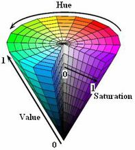
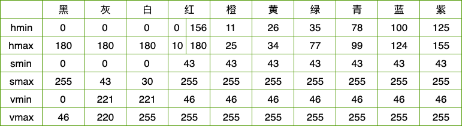
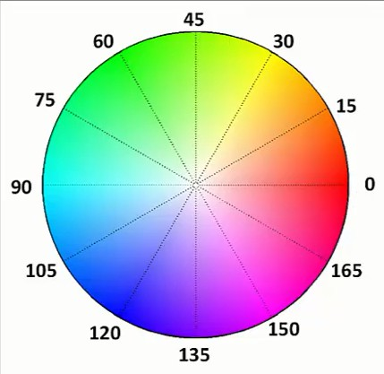
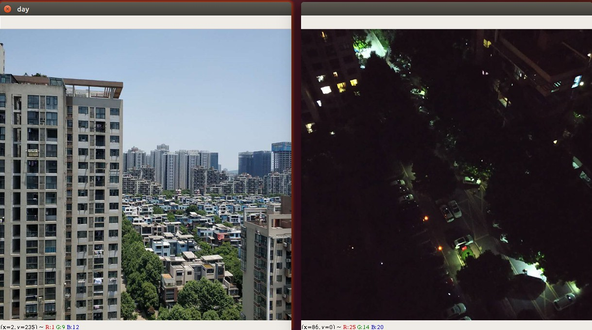

HSV颜色模型
HSV颜色模型¶

HSV(Hue, Saturation, Value)是根据颜色的直观特性由A. R. Smith在1978年创建的一种颜色空间, 也称六角锥体模型(Hexcone Model)。
这个模型中颜色的参数分别是：色调（H），饱和度（S），明度（V）
色调H¶
用角度度量，取值范围为0°～360°，从红色开始按逆时针方向计算，红色为0°，绿色为120°,蓝色为240°。它们的补色是：黄色为60°，青色为180°,品红为300°；
饱和度S¶
饱和度S表示颜色接近光谱色的程度。一种颜色，可以看成是某种光谱色与白色混合的结果。其中光谱色所占的比例愈大，颜色接近光谱色的程度就愈高，颜色的饱和度也就愈高。饱和度高，颜色则深而艳。光谱色的白光成分为0，饱和度达到最高。通常取值范围为0%～100%，值越大，颜色越饱和。
明度V¶
明度表示颜色明亮的程度，对于光源色，明度值与发光体的光亮度有关；对于物体色，此值和物体的透射比或反射比有关。通常取值范围为0%（黑）到100%（白）。
结论:
-
当S=1 V=1时，H所代表的任何颜色被称为纯色；
-
当S=0时，即饱和度为0，颜色最浅，最浅被描述为灰色(灰色也有亮度，黑色和白色也属于灰色)，灰色的亮度由V决定，此时H无意义；
-
当V=0时，颜色最暗，最暗被描述为黑色，因此此时H(无论什么颜色最暗都为黑色)和S(无论什么深浅的颜色最暗都为黑色)均无意义。
注意: 在opencv中,H、S、V值范围分别是[0,180]，[0,255]，[0,255]，而非[0,360]，[0,1]，[0,1]；
这里我们列出部分hsv空间的颜色值, 表中将部分紫色归为红色


判断当前是白天还是晚上¶

实现步骤¶
- 将图片从BGR颜色空间,转变成HSV颜色空间
- 获取图片的宽高信息
- 统计每个颜色点的亮度
- 计算整张图片的亮度平均值
注意,这仅仅只能做一个比较粗糙的判定,按照我们人的正常思维,在傍晚临界点我们也无法判定当前是属于晚上还是白天!
1 2 3 4 5 6 7 8 9 10 11 12 13 14 15 16 17 18 19 20 21 22 23 24 25 26 27 28 29 30 | |